選抜発表オンエアされたら
すぐに日記書くつもりだったのに
時間かかっちゃったー
いつか言ったかもしれないけど
選抜発表のあとの日記は
とっても悩んでしまう
ずっと待っててくださったみなさん
ごめんなさい(´；；｀)
前回の日記はたくさんのコメント
本当にありがとうございました！
みなさんに支えられてるんだなってことは
もちろん常々感じてるんだけど
やっぱり日記の節目って意味でも
前回の記事は特別だなー＊
選抜発表のこと書いてくださった方もいて
あーみなさんはもう前を向いているのに
私がここで立ち止まってちゃだめだなって
思いました(´・ω・｀)
一旦落ち着いたから
ちゃんと日記を通して
みなさんに伝えなくちゃねっ
アンダーメンバーに
帰ってきてしまいました
ただいまって言ったら
どんなお返事が返ってくるんだろう。
とりあえず帰ってきました
「次も選抜残ろうねひめたん」
そう言って期待してくださった方々
ステキな報告ができなくてごめんなさい
私たちに選抜が発表されてからオンエアまで
イベントや日記で
みなさんに会うのが辛かった。
落ちたってわかってるのに
どうかなーとか
次も入ってるといいんだけどねーとか
はっきりしたことが言えなかったから......
今の私が一番
ひめきゅんさんに伝えたいことは
選抜入れなくて
悔しいなーとは思うけど
後悔はしてないよってことです。
もっと高いところを目指さなきゃーとか
そう言って怒られてしまうかもしれない
それでも私は7thの期間
精一杯やってきたつもりだから
もっとここでこうすればよかったとか
準備不足だったなーとか
そんなことは思ってないです( ^ω^ )
全力でやった結果なので
あー自分はここまでだったんだーって
もっと頑張んないとなーってのが今回の反省。
なにより力不足だし
まだまだ伸ばすべきところが
私にはいっぱいあるから
またアンダーで勉強してきなさいって
ことなんだと思うし
いろんな場面において
ああ自分まだまだだなって
改めて感じることができてよかったなって思います
選抜メンバーって
それまでの私には未知の世界だったから
いつか入れたらいいな、くらいの
心持ちだったのはありますが
その考えがすでに情けないですが←
踏み入れてみると予想以上に
忙しくて、プレッシャーなんかもあって
充実しててやりがいがあって楽しくて！
初めて単独で雑誌の紙面に載せていただけたり
歌番組もほとんど初めてみたいなものだったりして
新しいことばかりの４ヶ月でした
序列が一列違うだけで
こんなにも違うものかって。
それで感じたのは、アイドルって
こんなにマルチで楽しいお仕事だったんだってこと
いつか選抜入れたらいいなーなんて
自分はなんて悲しいこと言ってたんだって
新しいポジションに立って初めて気づきました
そしてできることなら
いつまでもここにいたいなーって
まあ結果的には落ちちゃったけどね(´・ω・｀)
でもこの7th期間でさらに
乃木坂46のメンバーとして
がんばりたいなって思うようになりました！
今までは辛いことのが多い気がしてたけど
ちょっとリセットされたかなー
7thの握手会では
はじめましての方にたくさん出会えて
前からずっと応援してくださってる方には
ひめたんのこと推しててよかったって
優しい言葉をたくさんいただいて
それだけで私はこの４ヶ月
意味のあるものだったと思うし
全うできたかなって自惚れてみたり(＊^ω^＊)
7thでひめたんのこと見つけて
ちょっと応援してみよっかなーって
なったばかりのみなさんは
またメディアに出させていただけなくなる分
寂しい思いをさせてしまうんじゃないか
今までずっと応援してくださっていたみなさんには
また長いことお待たせしてしまうことに
なってしまうかもしれない
今は何よりそれが不安です。
みなさんはいつも私を助けてくださって
辛いときも励ましてくれるのに
今の私は同じだけみなさんに
元気を与えられる存在なのかなって
よく考えてしまいます
選抜に入ることがすべてじゃないよって
そう言ってくださる方もたくさんいらっしゃるけど
どうしても負い目を感じてしまう。
それでも今の私は
与えられたポジションを
全力で努めることしか考えてないし
今までと変わらず
また努力するつもりです
ひめたんのこと好きだよーって
応援してくださる方が
ひとりでもいらっしゃるなら
私は期待に応えたい。
初心を忘れずに、とよくいいますが
アンダーに帰ってきた今
私は本当の意味で１からのスタートなのかな。
根がネガティブなことあるから
くよくよしちゃうけど
ちゃんと前向きにがんばらなきゃー
アンダーにいると
１枚シングル出してから次までの期間って
長いなーって思うのに
選抜にいるとあっという間なんだよねー
次に順番がまわってくるのは
いつなんだろう......
あーもーだめだー
ポジションがすべてじゃないって
頭ではわかってるつもりなのにー
こんな私ですが
これからも応援してくださったら嬉しいです
いつも本当にありがとうございます
いまはまだパワーをもらってばかりだけど
みなさんにちゃんと恩返しできるようになりたい
まずはひとまわり大きくならなきゃ！
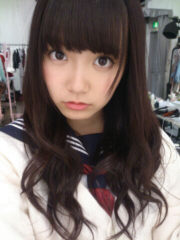
ひなちま、まあや、ろってぃー
そしてきいちゃん選抜おめでとう♪
ななせまるセンターおめでとう♪♪
日芽香
祝400回(＊^O^＊)
大図鑑もカウントしたら
きっともうちょっと書いてるんだけど
そーゆー細かいことは今日はいいです！
いつもひめたんの日記を読んでくださって
ありがとうございます♪♪
忙しい中コメントもありがとーう！
ひめたんはコメント読んでると
みなさんとお話してるみたいでいつも楽しいです☆
これからも更新がんばりまーす
いっぱい遊びに来てねっ
いつでも待ってるからねヽ(´・ω・｀ヽ)
それでねーひめきゅんさんに
ささやかなお礼を込めて
名札作ってみたのー
だからプリントアウトして
握手会に持ってくるとか定期入れに入れるとかして
持ち歩いてくれたら嬉しいな(っ´ω`c)
自分の顔写真貼ってもいーんだよ！
ひめきゅんno.は何でもいいけど
例えばこの日記にコメント書いてみて
その反映された番号とかにしたら
みんなとかぶらなくていいんじゃないかな☆
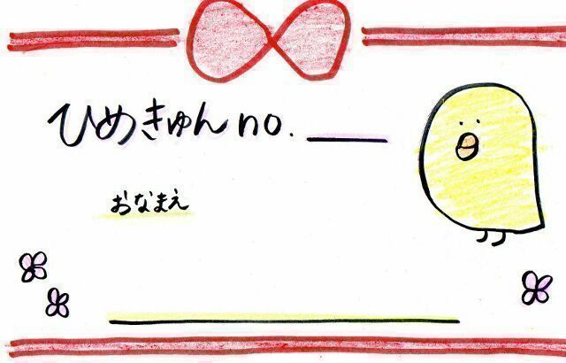
NOGIBINGO!2は
妄想シチュエーションの回でしたー
詳しくはまた書きまーす＊＊
明日は乃木どこ！選抜発表！
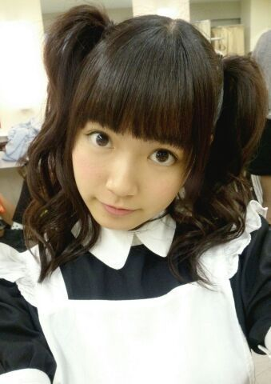
(＊´・ω・＊)
ちらっ。
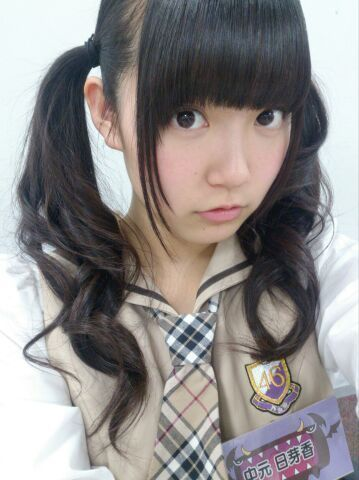
前髪２ミリ切ってもらったの
どう？ひめきゅんさんなら気づくでしょ？♪
今日はNOGIBINGO!2の収録に
行ってきましたー＊
あっそうだそうだ
明日のNOGIBINGO!2 みてね！
よかったー忘れなかった\( - )/
ひめたんはどうも
唇がうすっぺらーいらしい。
愛未(能条愛未ちゃん)とか
まあや(和田まあやちゃん)とかさ
チャーミングなリップしてるよねー
いーなーうらやましいなー
飛ぶ直前。
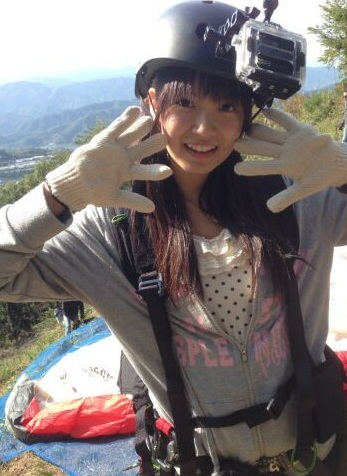
この頃はまだ
おそとぽかぽかしてたなー
ひめたんねー
寒いし空気乾燥してるしで
もう今外気に勝てないー(´；；｀)
おそとでたくないの(´；；｀)
ねーお願いひめきゅんさん
私のために東京を春にしてー？
おねがーいおねがーい(´；；｀)

 ひめたんビームは
ひめたんビームは
コンビニ一軒を破壊するほどの
威力があるって本当ですか？ひめたんが知ってるひめたんびーむはそんな
人様にご迷惑かけるようなもんじゃ
ないはずです(´；；｀)
びーむはみんなを幸せにごめんなさい黙ります
最近、ひなぴょんに浮気しつつあるんだけど...
それは置いといて、
ひめたんリボンはどういう所で買ってるの？ちょっと置かないで！
そんなさらーっと言ったら許されるかなとか
思っちゃだめですよー｀・ω・´
ひめたんはぼーっとしてるってよく言われるけど
たーまーに地獄耳になる時があるらしいからね
聞いてないフリしてても意外と聞いてるからね！
......で本題なんだったっけ？
やさしさとはでのひめたんのパート教えてー！◎１番 Bメロ
一部始終を眺めてた道のこっちで(全員)
冷静過ぎたことがだめだったんだ(能条 中元)
もっと感情的に僕が走れたら(全員)
そうバスの時間に間に合った(能条 中元)
◎１番 サビ
◎２番 Aメロ
取り返しのつかない失敗してしまったように
周りのみんなは哀れんだ(能条 中元)
◎２番 Bメロ
急に相談されたって相槌打って(全員)
愛を客観的に語ることなんて(全員)
◎２番サビ
◎Cメロ
思い出すのはやめにして(能条 中元)
孤独を選ぼう(全員)
◎落ちサビ
愛の意味とその価値を僕は考えたけど(能条 中元)
答えが見つからなくてただ歩くしかなかった(全員)
◎ラストサビ
こうしてみるとややこしいな(´・ω・｀)笑
愛未ひめたんペアは安定ですね＊＊
最近荷物を持って大変そうに階段を登る
おばあさんを良く見かけるので、
「お荷物お持ちしましょうか」と
声をかけたいのですが、なかなかかけられません
こんな時ひめたんならどうしますか？善人！ステキですねっ
なんかほっこりしちゃうなあ。
ひめたんはそーゆー時にためらわないで
声かけちゃうタイプの人間だから
あまり考えたことないけど
笑顔で話しかけてみたらいいと思うよー
がんばってね♪♪
ひめたんはどっちが好き？？メロンパンorクロワッサン☆なんとひめたん、この秋冬で
メロンパン嫌いを克服してしまいました(・∀・)
なぜ克服した自分！！カロリー爆弾！！
だからねどっちか食べていいよって言われたら
メロンパンを取るかなー
とりりーぬさんが成長したら
ダルチェさんになるって噂で聞いたんやけど、
本当にあんな変な感じになるの？ダルチェさーん！
めっちゃ脚キレイなダルチェさんでしょー？
あっわかんない方はググッてみてね( ^ω^ )♪
ダルチェさんみたいな美人さんになれば
いいんだけどねー
美"人"さん......か。ややこしいな
じゃあ、マジメな質問しちゃうよ？
ひめたんは地球が何色だと思う？俺は赤だと思う！！笑 みんなで一斉にぴんくのサイリウム掲げたら
地球はぴんく色になるんじゃないかな\( - )/
ひめたんは、動物の形をした食べ物
（たい焼きとか、人形カステラ）を
たべれるーー？？そーゆーのは喜んで食べるタイプよー
生エビとかは食べないけど
たいやきは、ほら、鯛じゃないからさ
小麦粉とかからできてるって知ってるから
ぜーんぜーん問題ないでーす♪
俺ももっとユーモアのセンス欲しいです!
どうやってゲットできますか？ひめたんに......聞きますか。
ひめたんも磨きたいよー(´；；｀)
コンビニに売ってたりしないかな
ひめたんのブログの
コメント欄下２ケタに46を踏んだ方へ
手書きでコメ返するコーナー
＼ ひめたん46 ／
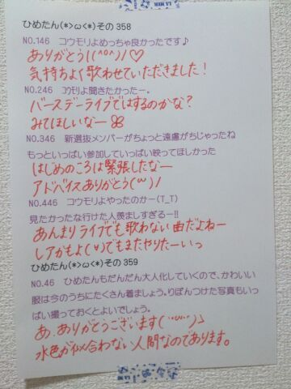
いつもたくさんコメントありがとうございます
万歩計やったことないーって方
多かったなあー
よかったらやってみてねー☆
次は更新400回！
次回もお楽しみにーっ
(＊´・ω・＊)
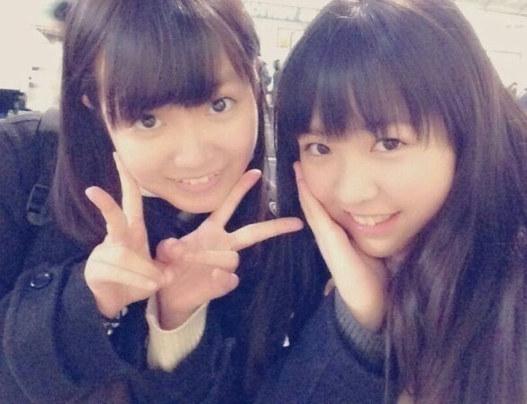
姉妹ちゃんペアの
みりりん(渡辺みり愛ちゃん)

ふたりでカフェ行きましたー！
なんかねー行きたいねーって
ふわっと約束はしてたんだけどね
なんかお話したくなったから誘ってみたの
ひめたんから誘うことって
あんまないんだよー(/)・ω・(ヾ)
あまりにお話が弾むから
カフェ２件ハシゴしてやりましたよんっ
またさらに仲良くなれたかなって思うし
かわいくて愛おしくて
やっぱり自慢の妹ちゃんだなって///
やだーみりりんにベタベタすぎて
引かれたらどーしよ(笑)
みなさん引かないで(´；；｀)
あっみりりんファンのみなさん
みりりんが
危ないことになったり
迷子になったりってことがないように
全力で気を張ってたから
ご安心くださいね＊＊
これからも仲良くすること
どうか許してくださいねよろしくね( ^O^ )
ままに勧められて
万歩計のアプリをダウンロードしたのよー
それでさ、よく
１日10000歩いたら健康にいいって
聞くじゃなーい？
なんだけどね意外と歩けないの！
10000歩......
みなさんもやってみてー｀・ω・´
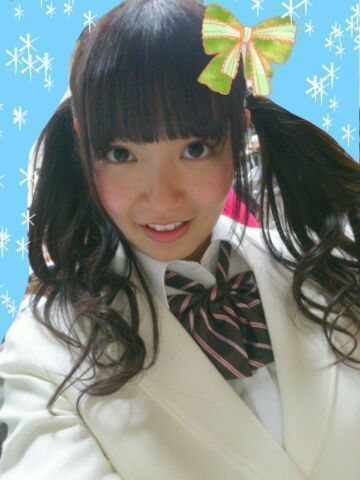
今日は収録してきましたー！
詳しくは情報解禁をお待ちくださいませ。

 いっつもつけてるブレスレットは
いっつもつけてるブレスレットは
どんなやつなんですかー？天然石のブレスレットだよー＊
たまに浄化してあげたりして
ちゃんとお手入れしてるんだよ∩´∀`∩
ひめたんビームで受けた傷は
ちーちゃん看病で治せるの？でたーちーちゃん看病！
あれ受けたことないんだよねー
聞くんかなー？謎ー (´>∀<｀)ゝ
大喜利回答シリーズ好き。ちょっと待って
大喜利やった覚えない(・∀・)
あれは確か質問にお答えするコーナー......のはず
ひめたんはやっぱり伊勢丹のことを
いせたん↓（ひめたん↓の発音）って
言っちゃう感じですか？→↑↑↑
いせたん って言いますかね＊
→↑↑↑
ひめたん はどうかしら♪♪
 カルピスは原液のまま飲むタイプですか？
カルピスは原液のまま飲むタイプですか？ねーまじで(・∀・)
ひめたんのこと何だと思ってるのさ(・∀・)
濃いんでしょ？それくらい知ってるお！
「５倍に」薄めるってことも知ってるお
そーいやミルクで薄める派♪おいしーよー
ひめたんはトリマーさんって、
どんなイメージかな？？ひめたんもトリマーさんになりたい時期あったのー
わんちゃんが好きだったの
それでおうちの近くにトリマーさんいたから
ガラス越しにみてたなー。
ステキだと思います(っ´ω`c)ふぁいと！
ひめたんは３日だけ１人のメンバーと
無人島で暮らすことになりました。
そしたら誰を選んで連れて行きますか？愛未(能條愛未ちゃん)かな
なんでかってゆーと
楽しいお話してたら３日間飽きなさそうだから♪♪
大きくなったらひめたんになります！
38のおじさんでもなれるかな？えーっとねーそうだなー
がんばって(＊´ω`＊)応援する！
ひめたんのブログの
コメント欄下２ケタに46を踏んだ方へ
手書きでコメ返するコーナー
＼ ひめたん46 ／
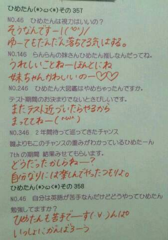
いつもたくさんのコメント
ありがとうございます
そうそうひめたんの初夢はね
ひめたんと おともだちふたりと
ハンバーガー屋さんでお話してるってゆ
みんなと比べるとなんとのほほんとして
平和な夢なんだーって感じがしたけど
これ悪夢だったらやだなあ(´・・｀)
夢......
いつも朝になったら忘れちゃう
そーゆーもんなのかしらねー
(＊´・ω・＊)
今日は幕張で個別握手会でした！
寒い中 来てくださったみなさん
ほんとにありがとーう\( ω )/
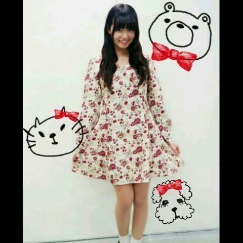
NICE CLAUPのワンピースだよー♪
４部......おろしふわふわ
５部......ふわふわツイン
４部のはおろし「巻き」じゃないんだよ
おろし「ふわふわ」なんだよおお
りぼんは今日はおやすみだよ
なんだかたくさんの方が来てくださって
ひめたんはずーっと楽しかったよ！
最初っから最後までずーっと！
はじめましての方
勇気を出して来てくれてありがとねー♪♪
おなじみの方 いつもありがとうねっ
次にみなさんに会えるのは
２月の握手会の方もいるし
バースデーライブの方もいるけど
ずいぶん遠いなー(´；；｀)
途中で寂しくなっちゃうー
待つのってつらいんよね......
今ね「つら」って打ったらね
予測変換にね
(/)・ω・(ヾ)つらいむ
って出てきたよ！
なになにかわいすぎるーっ
あっそうそう
ハンドクリームの香り
みなさんわかりましたかねー？
正解は バニラの香りでした＊＊
あまーい香りがとってもお気に入り！
バニラの香りらぶっ
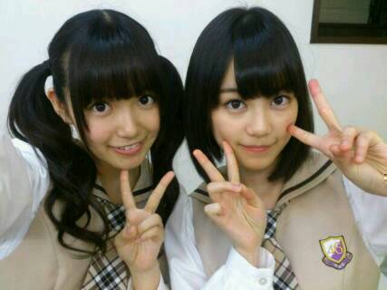
いくちゃん(生田絵梨花ちゃん)の生誕祭
とってもステキでした＊＊
いくちゃんファンのみなさんのやさしさを
とてーもとてーも感じました♪♪
もうちょっとで17さいだってね！
なんだかみてて
ほっこりしちゃったー(＊´ω`＊)
なんとなんと
メンバーを代表してお手紙を読むという
とんでもない大役を努めさせていただきましたっ
ひめたんはぶきっちょなので
言いたいことの全部が
伝わったかどうかは謎だけども(笑)
大好きないくちゃん生誕祭ってゆ
大事なイベントに参加させていただけて
とっても光栄でした☆
ほんとのお誕生日の日も
ステキないちにちになったらいいね！
さて、NOGIBINGO!2......
ごーめんすっかり告知してなかったてへ←
見てくださった方はありがとねー
ここまで#1、#2終わって
中元の空気さにはみなさんびっくりされてる
んじゃないかなーなんて思うんですが
来週は
来週はカットされてなかったら(小声)
来週はきっとまともになんかやります！
またオンエアが近くなったら
告知しよーかなーとは思うけど
忘れたらいけないから先にゆっとくね｀・ω・´

 あたしにあだ名つけて！
あたしにあだ名つけて！お名前から ひめりん とか呼ばれてるのかな
めっちゃかわいー(＊´ω`＊)
そうねーどうしようかね
ひめりーぬちゃん とかどうー？
ひめたんがいつもつい食べ過ぎてしまう
お正月料理はなーに？実家で過ごすと きなこ餅かな＊
でもね今年はおばあちゃんがお雑煮してくれて
あっさりな味付けで
ちょっとヘルシーだったと思うよ！ちょっとね！
今、ひめたんビームで餅を焼いています。
.........焼けません(゜∇゜)そんな手抜きをしてはならーんっ
ちょっと面倒だけど火で焼いてください
そもそもびーむは光線であって
お餅を焼くものではなーいっ
ウルトラマンビームでお餅が焼けないのと一緒！
 ひめたんはひめたんの髪の触角と
ひめたんはひめたんの髪の触角と
とりりーぬさんどっちが大事？触角(即答)
とりりーぬさんの長所、短所を教えてください！長所は３秒で描けるところ
短所はスタイルが悪いところ かな(＊^^＊)
ひめたんの必殺技って
ひめたんびーむと
ひめたんれーざーと
ひめたんまじっくの他に何かあったっけ？やめて、ほんとにやめてください(笑)
こんなこと書くと握手会とかで
「ひめたんれーざーやってー！」とか
言われちゃうでしょ(´；；｀)
ひめたんのブログの
コメント欄下２ケタに46を踏んだ方へ
手書きでコメ返するコーナー
＼ ひめたん46 ／
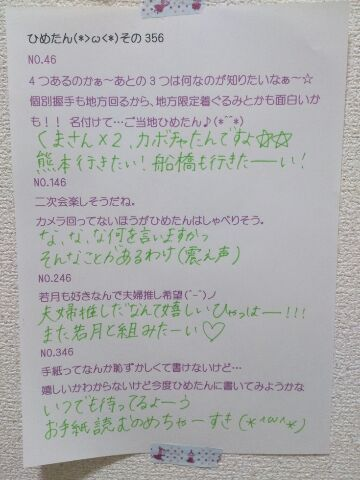
いつもコメントたくさん
ありがとうございます
横アリライブは当落はわかっても
座席はまだわからないってね！
なんだそれー気になるねー
１次落ちちゃったーって方も
結構いらっしゃるみたいで
きっとたくさんの方が応募してくださってるから
そーゆーことになるのかなって考えたら
喜ばしいことなんだろうけど
やっぱりひめたんはみんなに来てほしいなー
２次は当たりますように( ´ω` )
当選した方 おめでとう！
今から全曲予習しといてー♪♪
センターお疲れさまでした！
まだお受験真っ最中の方
ちょっと羽のばすことも大事だよ？
(＊´・ω・＊)